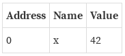
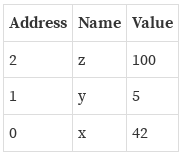
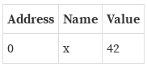
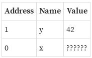
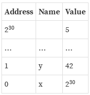

SPOILER ALERT: I will be hired by Mozilla to work with Developer Relations team
Brief Introduction
First inventor: Graydon Hoare (8 years ago)
Mozilla Foundation (~2009)
Zero-cost abstraction
High concurrency support
Memory safety by ownership
Lifetime concept
Servo <3
and that in real life...
Ownership
Safety
Problems related to safety cause not only software crash, also security vulnerabilities.
Null pointer deference
Double free
Use-after-free (more pointer problems..)
Memory management
What do other languages do?
Most languages with a garbage collector heap-allocate by default
Every value is boxed
There are some possible optimizations that don’t make it true 100% of the time
Garbaje Collection
Computer cannot know the exact timing that each object should be freed
Need of more memory and CPU power
No predictability
Limited concurrency
Large code size
Stack

Stack

Stack

Heap

Heap

Runtime Efficiency
Managing the memory for the stack is trivial
Managing memory for the heap is non-trivial
Concurrency
Rust Inside Other Languages
The problem
Start ten threads. Inside each thread, count from one to five million. After all ten threads are finished, print out 'done!'.
Rust has something called a 'foreign function interface', often shortened to 'FFI'
Rust has support for FFI in both directions
Let's try it with examples in Ruby, Python, and JavaScript
Crates and Modules
Crates and Modules
When a project starts getting large, it’s considered good software engineering practice to split it up into a bunch of smaller pieces, and then fit them together.
Rust has a module system
A crate is synonymous with a 'library' or 'package' in other languages
"Cargo" as the name of Rust’s package management tool
Crates can produce an executable or a library, depending on the project